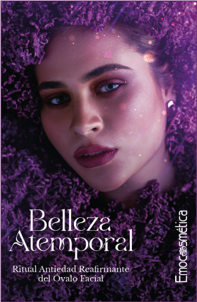
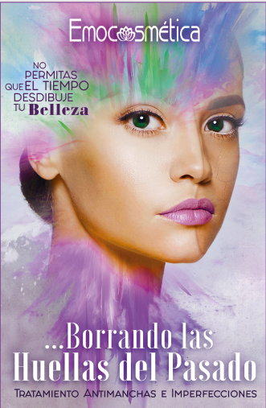
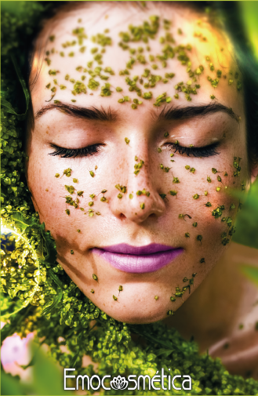
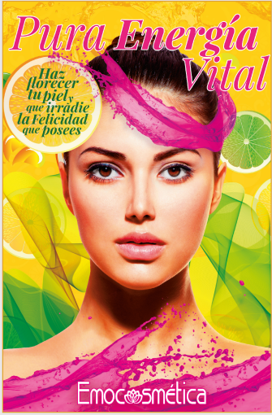
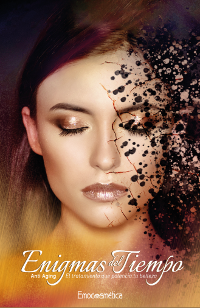
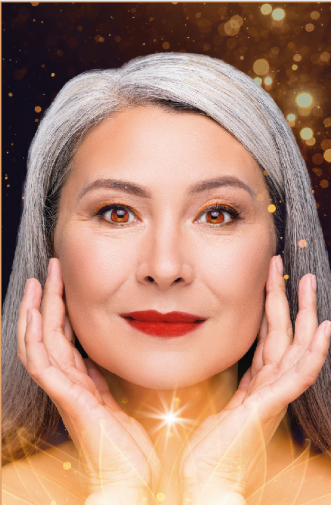
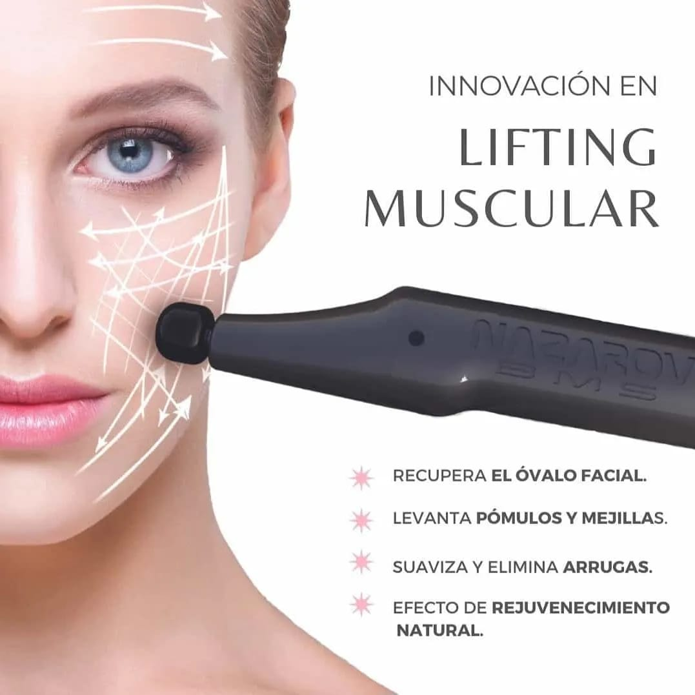
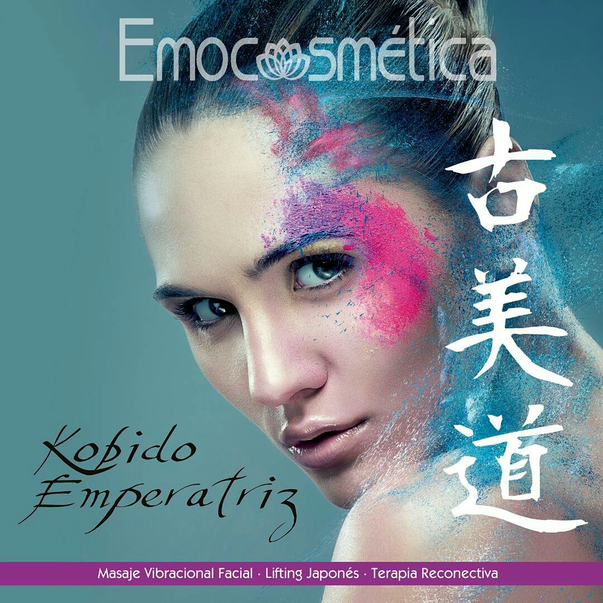

Ahora, un Ritual de Belleza Emocional, basado en comprender las razones multifactoriales (flacidez, acúmulos, inflamación y pérdida de tensión) que debemos trabajar para obtener Resultados reales, saludables y perdurables en el tiempo.
Ritual de Belleza Emocional que predispone la piel para la recuperación de su Equilibrio Natural y favorece una regeneración poderosa, eficiente y duradera.


Ritual de Belleza facial de Higiene profunda, Equilibrio hormonal, Desintoxicación y Restauración Sebácea para fomentar una piel sana y radiante

Aporta grandes dosis de nutrientes y vitamina C, ayuda a equilibrar, purificar y predisponer a la piel para la recuperación de su Equilibrio Natural y favorecer una regeneración poderosa, eficiente y duradera.

Ritual de Belleza Facial Integral que mitiga el evejecimiento del rostro, devolviéndole lozanía y belleza natural, por medio de procesos no Invasivos, Naturales y Respetuosos.

Ritual Innovador, natural y no invasivo, basado en el trabajo muscular para para rostro y cuello, que restaura la forma, tono y fisiología, logrando un efecto rejuvenecedor rápido, progresivo y duradero.


Kobido Emperatriz logra fucionar técnicas de drenaje linfático clínico, terapias vibraciones, Medicinas Tradicionales china y japonesa, tratamiento facial antiedad y con métodos de masaje profundos y preciosos, se consigue mejorar la oxigenación y nutrición de las células de la piel, activar, iluminar y tonificar el rostro.